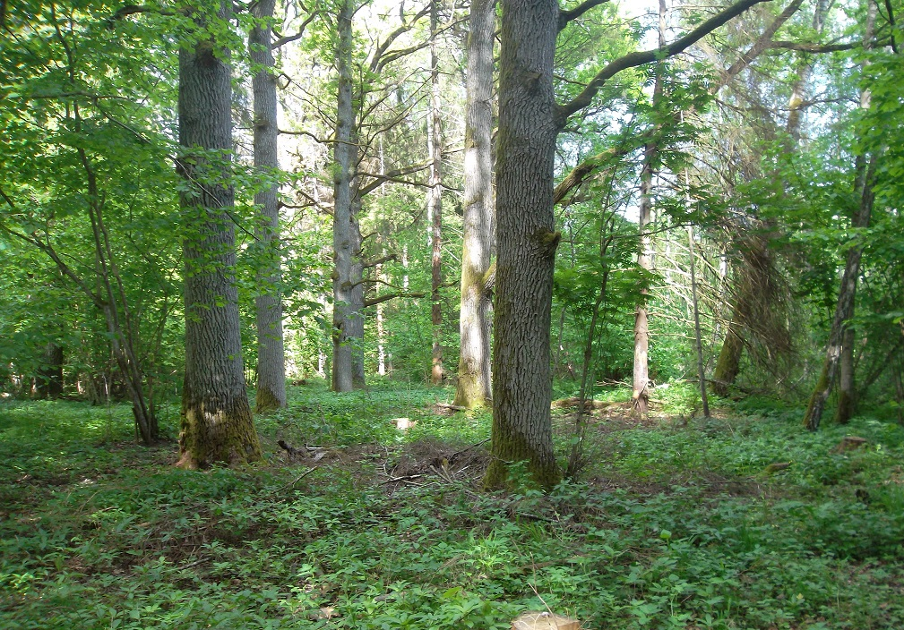

Gārša sastopama auglīgās augsnēs un ir augu sugām bagātākais mežu tips. Gāršā aug galvenokārt platlapji – ozoli, oši, retāk liepas, gobas, vīksnas un skābarži, kā arī egles. Pamežs parasti ir biezs – to veido lazdas, ievas, liepas, pīlādži, sausserži, irbenes un segliņi. Zemsedzē aug daudz lakstaugu. Pavasarī, kamēr koki vēl nav salapojuši, uzzied zeltstarītes, baltie un dzeltenie vizbuļi, zilās vizbulītes, cīrulīši, vēlāk arī kreimenes.

Avots: www.ekoforest.lv